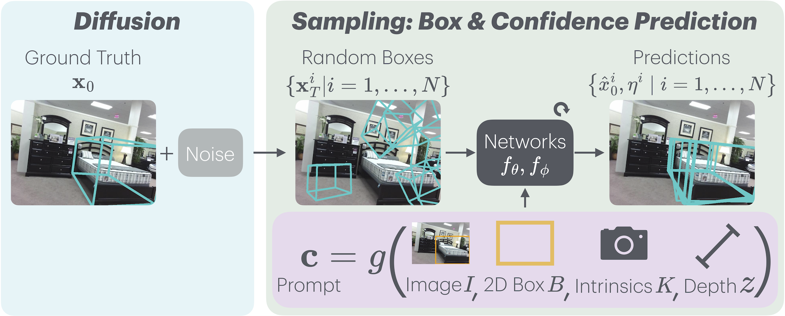
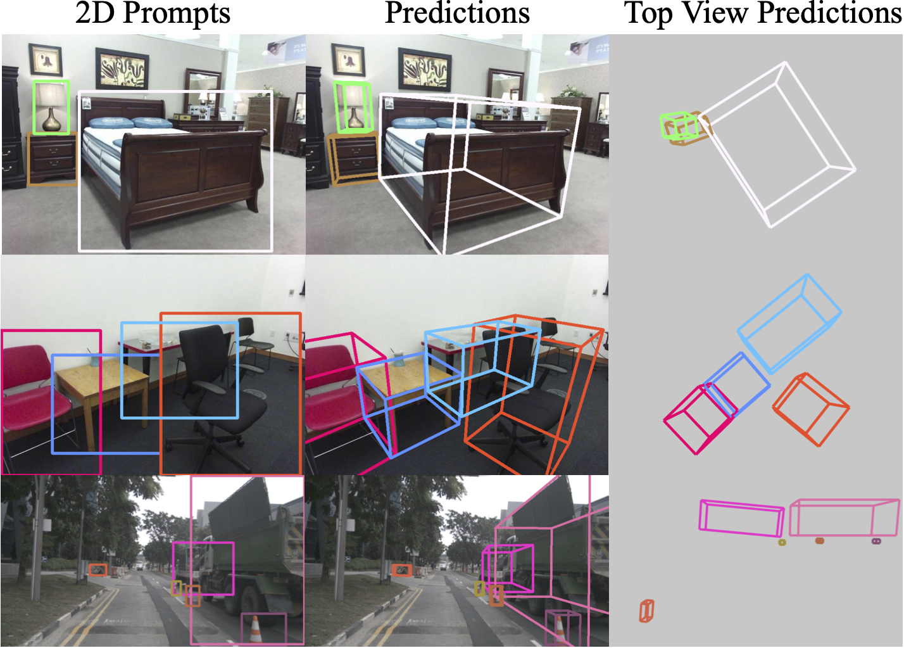
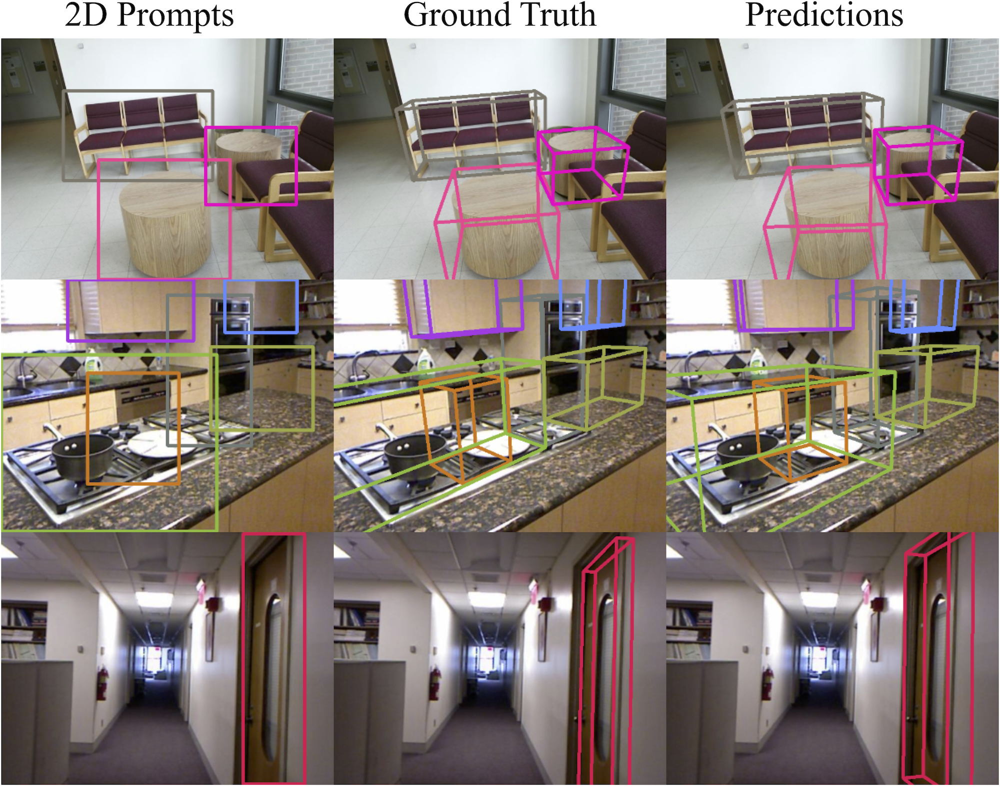
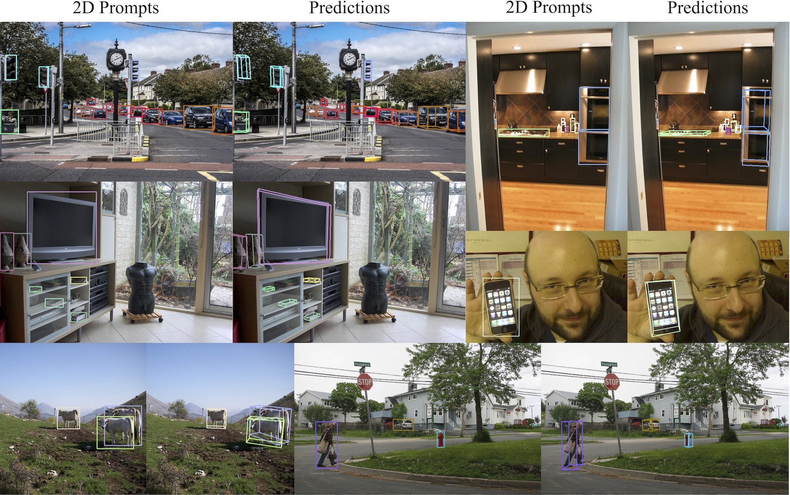
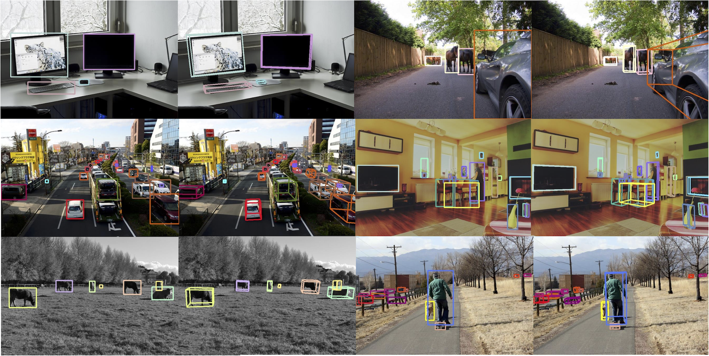
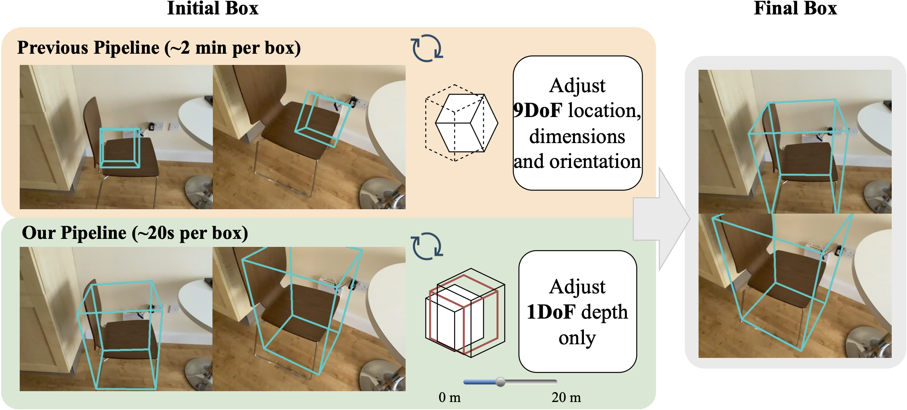
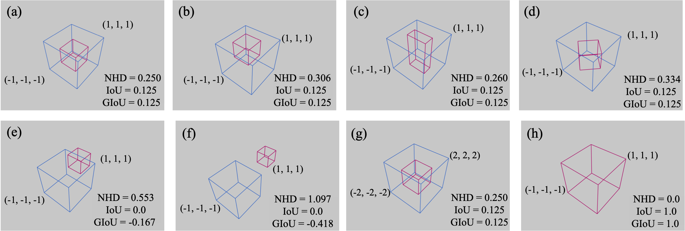

CatFree3D: Category-agnostic 3D Object Detection with Diffusion
Abstract
Image-based 3D object detection is widely employed in applications such as autonomous vehicles and robotics, yet current systems struggle with generalisation due to complex problem setup and limited training data. We introduce a novel pipeline that decouples 3D detection from 2D detection and depth prediction, using a diffusion-based approach to improve accuracy and support category-agnostic detection. Additionally, we introduce the Normalised Hungarian Distance (NHD) metric for an accurate evaluation of 3D detection results, addressing the limitations of traditional IoU and GIoU metrics. Experimental results demonstrate that our method achieves state-of-the-art accuracy and strong generalisation across various object categories and datasets.
Method Overview

Prediction Results
Omni3D Prediction Results
Our method can predict 3D bounding boxes with high accuracy on object categories seen (left) and unseen (right) during training.


COCO Prediction Results
Our method can generalise well to in-the-wild objects on the COCO dataset.


Application for Data Annotation
Our method can be used for data annotation in 3D object detection tasks. In a conventional 3D box annotation pipeline, annotators typically need to adjust a randomly initialised 3D box across nine degrees of freedom (rotation, translation, and size) until it appears correct in every view. This process is time-consuming and labour-intensive. Our model streamlines this workflow by reducing the task to a single degree of freedom, depth, significantly accelerating the dataset labelling process.

Metric: Normalised Hungarian Distance
We propose a new metric, Normalised Hungarian Distance (NHD), to provide a more precise evaluation for 3D object detection.

BibTeX
@article{bian2024catfree3d,
title={CatFree3D: Category-agnostic 3D Object Detection with Diffusion},
author={Wenjing Bian and Zirui Wang and Andrea Vedaldi},
journal={arXiv preprint arXiv:2408.12747},
year={2024}
}